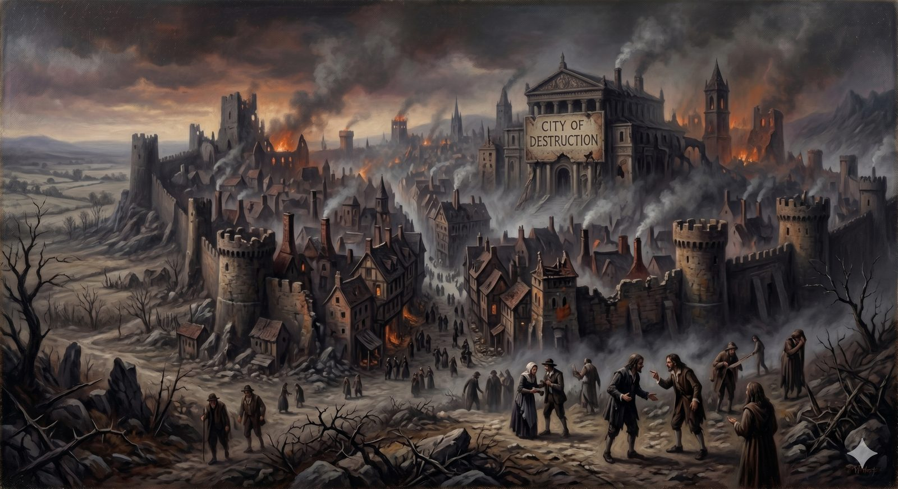

The City of Destruction
Where every pilgrim begins — and what makes anyone leave at all.
"My people have committed two evils: they have forsaken me, the fountain of living waters, and hewed out cisterns for themselves, broken cisterns that can hold no water." Jeremiah 2:13 (ESV)
Bunyan opens his story with a man who cannot stay where he is. The city around him is not yet burning; nothing has visibly changed. But he has read something in a book that will not let him rest, and he stands in a field with his back to his own house, asking the only honest question left to him: what shall I do?
We begin in the same place, and for the same reason — not with a claim you are asked to accept about the Bible, or the church, or God, but with a willingness to look honestly at your own life. That willingness is where every road to anywhere true begins. And it is worth saying at the outset: if these questions feel live to you rather than merely interesting, that is already something. The wish to see clearly is not a neutral achievement. Something, perhaps, has already begun.
Part OneWhat we were made for
Before we can say honestly what is wrong, we have to say what is at stake — because the wrongness only comes into focus in its light. So we start not with the diagnosis but with the God the diagnosis is about.
He is not, first of all, a rule-enforcer keeping a ledger. The God Scripture describes is the one who plants a garden and walks in it in the cool of the day. His own life — Father, Son, and Spirit — was never lonely or in need of us; it was a fullness of self-giving love overflowing among three Persons before the world existed. He did not make us because he was incomplete. He made us out of sheer generosity, to bring us inside that love: to know him and be known by him, the way you are known by someone who has loved you a long time.
📖 The Scripture behind this Entailedwhat’s this?›
The claim: God did not create out of need or loneliness; his own triune life was a fullness of self-giving love before the world existed, and he made us out of generosity, to bring us into that love.
- Acts 17:24–25 (ESV) — “The God who made the world … is not served by human hands, as though he needed anything, since he himself gives to all mankind life and breath and everything.”God needs nothing from creation; he is the giver, not a receiver of what he lacks.
- John 17:24 (ESV) — “Father … you loved me before the foundation of the world.”Love flowed between Father and Son before creation — the divine life was never lonely.
- 1 John 4:8 (ESV) — “God is love.”Love is not something God acquired but what he eternally is.
Good and necessary consequence from several texts, not a single proof-text; the synthesis is shown.
That is the fountain. Jeremiah's picture of God is not a throne or a courtroom but a spring of living water — the kind that never fails, that you could drink from forever and never drain. We were made to drink there. Everything that follows is the story of what happened when we walked away from it.
Part TwoThe honest look
Now the hard part — but notice what kind of hard it is.
Jeremiah names two evils, and almost everyone collapses them into one. They have forsaken me, the fountain of living waters — that is the first. And hewed out cisterns for themselves, broken cisterns that can hold no water — that is the second. We left the spring, and then went to enormous trouble building leaking tanks to replace it. The tragedy is not mainly that the tanks leak. The tragedy is what we walked away from to dig them.
📖 The Scripture behind this Directwhat’s this?›
The claim: The root human problem is a two-fold exchange: forsaking God, the fountain of living water, and digging our own broken substitutes that cannot hold what only he provides.
- Jeremiah 2:13 (ESV) — “For my people have committed two evils: they have forsaken me, the fountain of living waters, and hewed out cisterns for themselves, broken cisterns that can hold no water.”God names exactly two evils — leaving the fountain, and building leaking substitutes.
A single text states the claim outright; padding it with weaker verses would dilute rather than strengthen.
There is a precision worth slowing down for here, because it changes the whole feel of the diagnosis. When Paul says we all "fall short of the glory of God," the word he uses does not picture an arrow aimed at a target and landing just shy of the mark. It pictures lack — that you could have had the treasure, and you do not have it, because you reached for something smaller instead. So the weight of the diagnosis is not shame at how far we fell. It is grief at what we traded away. The leaking cisterns are not evidence that we are inadequate. They are evidence of an astonishing exchange.
C. S. Lewis's diagnosis of the same thing was that the trouble is not that our desires run too hot, but that they have gone small and cold — that we settle, over and over, for far too little. The problem was never that we wanted too much. It was what we attached our wanting to.
Part ThreeMore than bad choices
It would be easy to hear all this as a tally of mistakes — that we have made some bad calls and could, with effort, make better ones. But that is not what Scripture describes, and it is not what most of us find when we are honest.
Paul's account of the inner life of sin, in the seventh chapter of Romans, is the most exact description of it in the New Testament, and it does not read like a list of slip-ups. It reads like a man describing a power he cannot simply decide to overrule: the good he wants to do, he does not do, and the thing he hates is the thing he keeps on doing. Anyone who has truly tried to change something — really tried, more than once, and watched the change refuse to hold — knows that feeling from the inside. It is not proof that you have not tried hard enough. It is an accurate report of a condition.
📖 The Scripture behind this Directwhat’s this?›
The claim: Sin is not merely a series of bad choices to be corrected by greater effort, but a condition — a bondage of the will that willpower cannot reliably overrule.
- Romans 7:18–19 (ESV) — “For I have the desire to do what is right, but not the ability to carry it out. For I do not do the good I want, but the evil I do not want is what I keep on doing.”Paul describes sin as a power he cannot simply decide to overrule, not a list of slip-ups.
- John 8:34 (ESV) — “Truly, truly, I say to you, everyone who practices sin is a slave to sin.”Jesus calls sin slavery — a bondage, not merely an action.
- Ephesians 2:1 (ESV) — “And you were dead in the trespasses and sins.”The natural condition is death, not mere weakness — something requiring rescue from outside.
The texts state the bondage of the will directly; this is the historic Augustinian and Reformed reading, but it rests here on the plain words of Scripture.
In plain terms
Paul is not just saying people make poor choices. He is saying sin works less like a mistake and more like an addiction — something with hooks in us at a level willpower and good intentions cannot reliably reach. Most people know this without being told. There are patterns in your life you have honestly tried to break, and the breaking did not last.
Paul's point is that this is not a verdict on your effort. It is a diagnosis of a condition — and a condition needs treatment from outside, not a sterner talking-to.
Here someone will object, fairly, that this lets people off the hook — that calling sin a condition excuses it, the way we might excuse a fever. The objection deserves to be taken seriously, because there is a real instinct behind it: we should not be let off the hook. But a diagnosis is not an excuse. The doctor who tells you the lump is malignant has not excused it; he has told you the truth about what you are dealing with, so you will stop treating it with aspirin. Naming sin as a condition does not lower the standard. The standard is still the fountain. It only explains why no amount of effort at the cisterns has ever satisfied anyone — and why the help, when it comes, will have to come from somewhere other than ourselves.
Part FourThree faces of one trouble
People feel this condition in different registers, and the differences matter, because the gospel meets each one. Scripture names at least three.
Some feel it as bondage — being enslaved to something they cannot put down, whatever they have promised themselves. Some feel it as guilt — a real verdict, the sense of standing rightly condemned before a standard they have broken. And some feel it, most of all, as shame — not "I have done wrong" but "there is something wrong with me," a defectiveness no achievement quite covers. These are not three separate problems. They are three angles on the same one, and most of us know more than one of them.
And here is the thing the rest of this road depends on — the thing most often missed when faith gets reduced to moral improvement:
The answer to sin is not a better no. It is a better yes.
A heart does not let go of what it loves because it is ordered to. It lets go when it meets something it loves more. We will come back to this again and again, because it is how change actually happens. For now it is enough to see the shape of it: the way out of the cisterns is not grim willpower but a fountain better than the thing we left for.
The road aheadWhy anyone leaves
Bondage, guilt, shame — they have one thing in common. They are conditions, not performances. A slave cannot advise his way to freedom. A condemned man cannot improve his way to an acquittal. A person drowning in shame cannot decide, by force of will, to stop feeling defective. Each of them needs something done for him from outside — a liberation, a verdict, a welcome — that he could never manufacture from his own resources.
Which is exactly why the man in Bunyan's field does not roll up his sleeves and reform the City of Destruction. He cannot. He can only leave it — and he leaves not because he has worked out a solution, but because someone has pointed him toward a light in the distance and a narrow gate, and told him the way to life lies there.
That is where this road goes next. The honest look is not the end; it is the reason to set out. And the fountain we walked away from has never, for one moment, stopped flowing.